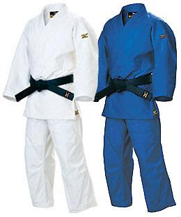

El judogi es la vestimenta usada para la práctica del judo. Se compone, fundamentalmente, de una chaqueta (llamada uwagi) y un pantalón blanco (denominado zubon). La chaqueta es gruesa y áspera, rígida y fuerte, para que así pueda aguantar tirones y movimientos bruscos. Tiene dos solapas que se cruzan, la izquierda por encima de la derecha. También tiene unos faldones más suaves y finos. Si vas a competir necesitaras uno de nuestros mejores trajes de competición(ten en cuenta que pase el reglamento y este homologado para competir). Para los mas principiantes tenemos unos judoguis de entranamirnto ,són mas finitos que los de competicion pero resisten igual de bien....
